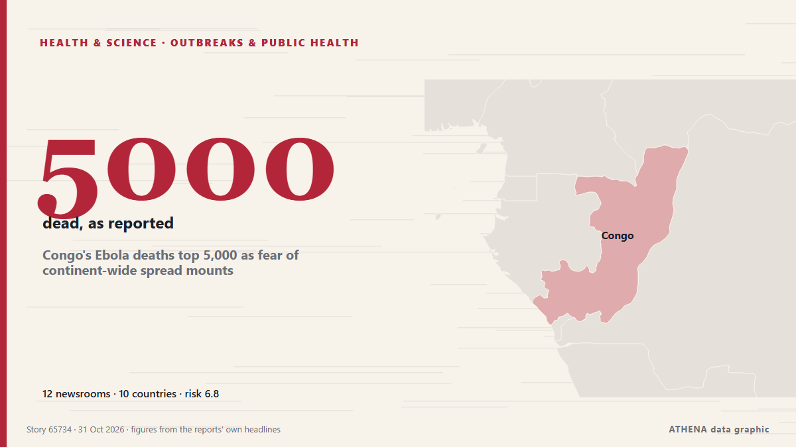

Épidémies et santé publique
| 18 oct. | 0 |
|---|---|
| 19 oct. | 0 |
| 20 oct. | 0 |
| 21 oct. | 1 |
| 22 oct. | 2 |
| 23 oct. | 1 |
| 24 oct. | 0 |
| 25 oct. | 0 |
| 26 oct. | 2 |
| 27 oct. | 4 |
| 28 oct. | 1 |
| 29 oct. | 5 |
| 30 oct. | 6 |
| 31 oct. | 1 |
Les titres sont affichés en anglais, tels que publiés.

Congo's Ebola deaths top 5,000 as fear of continent-wide spread mounts
Data from the Congolese Ministry of Health showed that the disease has killed 5,026 people out of 10,351 infected, at a nearly 50% lethality rate. de Stuff
Detainees drank urine, sweat in NSCDC Niger cell before 33 of them died – Report
The committee said detainees had no drinking water, while officers ignored warnings about overcrowding and the risk of suffocation. de Premium Times
Domestic abuse cases handled by community agencies remain elevated in 2025, with over half involving children
Child abuse continued to account for the largest share of low- and moderate-risk cases, with physical abuse being the most common type experienced, a Ministry of Social and Family Development report… de CNA (Channel NewsAsia)
A century after Houdini died, his legend still refuses to disappear
The master escape artist died in 1926 but his stunts, showmanship and encounters with spiritualists have kept him firmly in public imagination. de Free Malaysia Today
Andy Burnham ‘open’ to calls for British formal apology for slavery
The Prime Minister expressed his personal ‘sorrow and regret’ for the suffering caused by the transatlantic slave trade. de Evening Standard (London)
7 candidates nominated to lead World Health Organization
Selection process to include public forums, executive board interviews before final appointment in May 2027. de Anadolu Agency (English)
Former world champion boxer Tony Bellew is encouraging people to get a flu jab this winter
New research has found that people are putting it off. de WalesOnline
Mbeki says he will return to TRC Cases Commission
The TRC Cases Inquiry is probing whether there was political interference to block investigations. de SABC News
Flu Season Starts Early in Greece as New Variant Raises Concern
Greece’s flu season appears to have begun about two weeks earlier than usual, while a genetic change in the virus is being monitored in the United States. de to vima
Nigeria: Ebola - How Months of Ebola Preparedness Helped Nigeria Confirm First Case Within 24 Hours - Minister
[Premium Times] Mr Pate described the response as a continuation of Nigeria's experience in managing public health emergencies, recalling how the country contained the Ebola outbreak in 2014. de AllAfrica
Lim Guan Eng urges Anwar to scrap TuJu, call open tender for new navigation app for civil servants
KUALA LUMPUR, Oct 29 — Bagan MP Lim Guan Eng today urged Prime Minister Datuk Seri Anwar Ibrahim to abandon... de Malay Mail
Triple-murder fugitive Ndodana Tshuma’s extradition case resumes
Tshuma is wanted in the UK in connection with the murders of his wife and two daughters. de SABC News
Missing manhood scare: Police dismiss 10 cases, condemn mob attack on patrol vehicle
The Asankragwa Divisional Police Command has dismissed 10 reported cases of suspected missing manhood in its operational area as false, following medical examinations that confirmed the alleged… de MyJoyOnline
Africa Ebola outbreak passes 10,000 cases, mostly in DR Congo
Africa's latest outbreak of Ebola has passed 10,000 confirmed cases, the vast majority of them in the Democratic Republic of Congo, the Congolese health authorities said on Tuesday, with almost 5,000… de The Korea Times
Ebola cases top 10,000 in DR Congo
A nurse was killed by a group of young people in Bafwasende, DR Congo, after a false rumour about Ebola, and a second man was seriously wounded. de The Rio Times
Congo-Kinshasa: Cases Top 10,000 in DR Congo Ebola Outbreak
[DW] DR Congo has reported more than 10,000 Ebola cases and nearly 4,900 deaths. de AllAfrica
France reports first human Shamonda virus case
PARIS: French health authorities said they had detected the Shamonda virus usually affecting livestock in a human for the first time in a patient who later died, while adding t... de Oman Observer
Xhaka, Embolo return to Swiss squad after fake COVID docs affair
Granit Xhaka and Breel Embolo's return to Switzerland 'the right course of action,' national team director says. de Al Jazeera English
U.S. measles cases more than double what they were last year as outbreak spreads
Pennsylvania is the worst hit state, with at least 1,338 cases of measles confirmed in 44 counties so far this year, according to the Pennsylvania Department of Health. de NPR